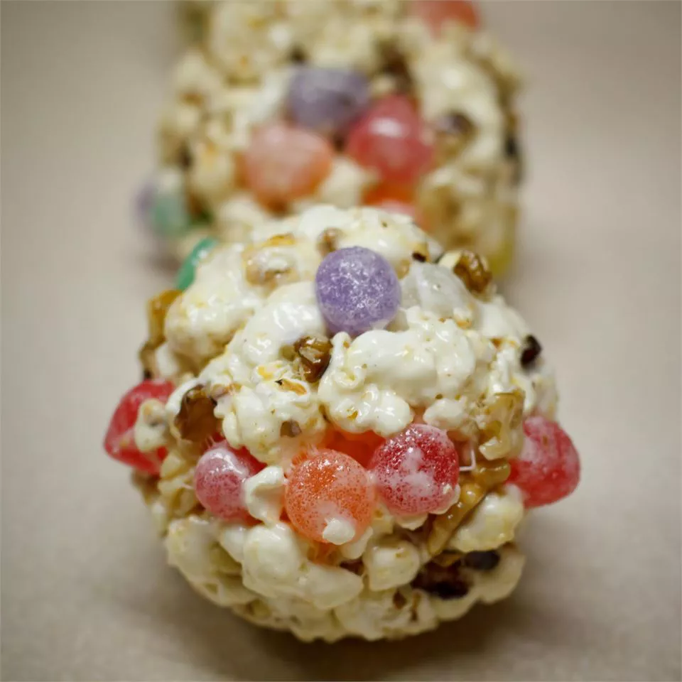

Marshmellow Popcorn Balls

Description
These are very easy popcorn balls to make.
The marshmallows make them similar to crispy rice cereal bars that are so popular.
Made with marshmallows, these are sweet, crispy, and chewy. Everyone's favorite combination!
Ingredients
- 1 tablespoon vegetable oil
- ½ cup unpopped popcorn
- 6 tablespoons butter
- 5 cups miniature marshmallows
Steps
- Grease a 9x13 inch baking dish. Set aside.
- Add vegetable oil to a 4 quart saucepan, and heat over high heat.
When oil is hot, add popping corn.
Keep pan moving constantly. When corn stops popping, remove from heat.
Put popcorn in prepared pan.
- Melt butter In a medium saucepan over low heat. Stir in marshmallows and cook until melted, stirring constantly.
Pour marshmallow mixture over popcorn and mix with spoon to coat evenly.
- Let mixture cool slightly. Smear butter on your hands or spray with non-stick cooking spray.
Mix popcorn with your hands so that it is evenly coated.
- Form popcorn into 8 balls